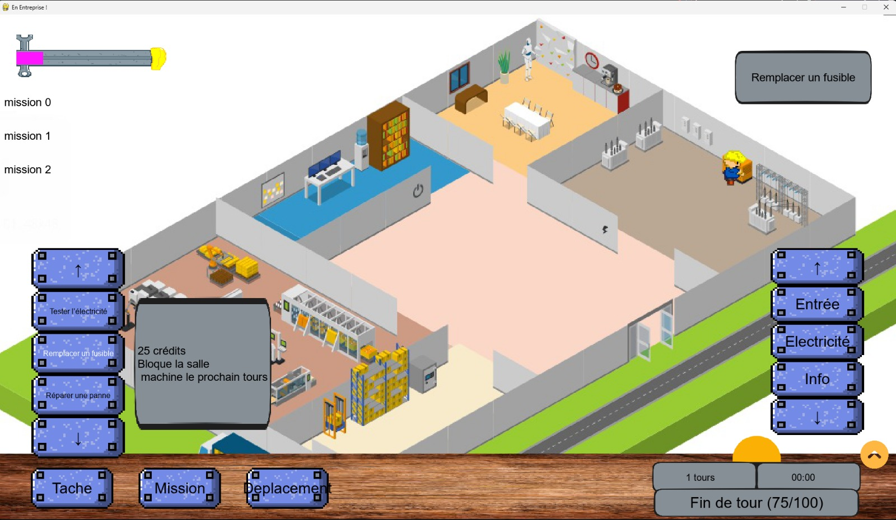

Jeu utile de gestion en temps réel sur la pression au travail

BURN OUT est un jeu de gestion en temps réel dans lequel un employé nommé BOB est confronté à des demandes, parfois contradictoires tout au long d’une journée de travail.
Deux ou plusieurs joueurs (les employeurs) aux personnalités très différentes donnent des missions en continu. Le joueur doit gérer ses priorités et sa barre d'énergie pour éviter le Burn out.
Un employé unique est dans une entreprise renfermant une salle des machines, une salle électrique, une salle de repos, une salle informatique et une salle de livraison où des employeurs donnent des taches à faire en temps réel qui devront être effectuées dans chacune.
BOB ne peut effectuer qu’une seule tache à la fois. Chaque employeur possède 3 missions constitueés chacune de 3 taches. L'orsqu'un employeur est tiré, il a la possibilité de demander à Bob de réaliser ses taches, tout en élaborant une stratégie, le but étant de réussir à terminer ses missions.
Donne des ordres très fréquents, exige des résultats immédiats et punit fortement les retards.
Propose des missions longues et importantes. Elle récompense la rigueur et la constance.
Imprévisible, il peut modifier les missions en cours et provoquer des situations inattendues.
Missions espacées, stress faible.
Missions plus fréquentes, choix cruciaux.
Pression maximale, erreurs coûteuses.
L'employeur dont BOB réussit à terminer les missions en premier gagne la partie.